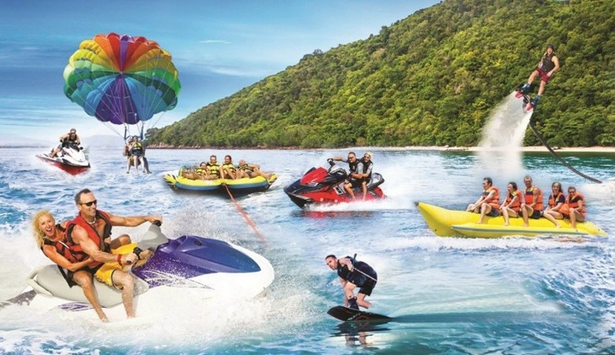

Discover the Beauty of Goa with the Trilling Water Sports Adventures!
GOA, the tiniest state in India, is famous for its status in the travel and tourism industry. It is surrounded by some spectacular beaches that offer a variety of water sports activities that attract domestic and international tourists. Goa is commonly regarded as one of the best destinations for water sports activities, due to its outstanding beaches and favourable weather conditions.
About Us
Welcome to Aqua-Quest Travel & Tourism! We take great pride in prioritizing creating unforgettable experiences for adventure seekers and ocean lovers. Established in 2014, we specialize in providing the ultimate seaside adventure by offering a range of thrilling water sports activities. Here, we make you feel that every wave is an adventure, and you must feel the power of the ocean.
Aqua-Quest believes in offering safe and exciting services with the help of our dedicated team of certified professionals. With over a decade in the travel and tourism industry, we take pride in crafting exceptional adventures. Our activities include Scuba Diving, Jet Skiing, Parasailing, Flyboarding, and Kayaking.
Safety is one of the top priorities in Aqua-Quest Travel & Tourism, hence it’s always enhanced and never compromised. To maintain the safety measures of every individual participant, our certified professional operators regularly inspect and uphold all the equipment to the highest standards possible. Whether you’re visiting with family, friends, or solo, we are dedicated to helping you create memories that will last a lifetime.